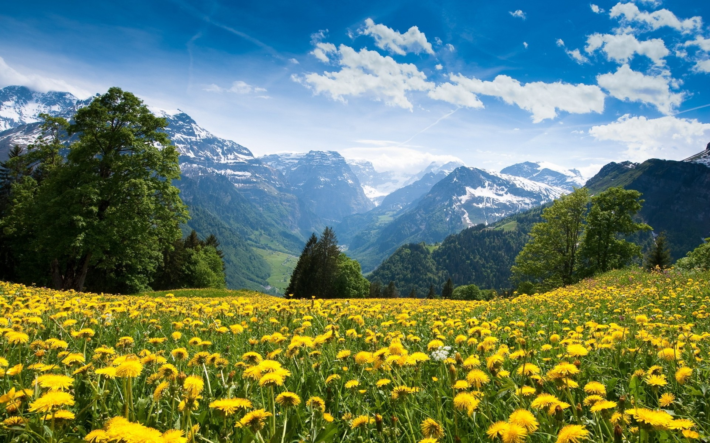
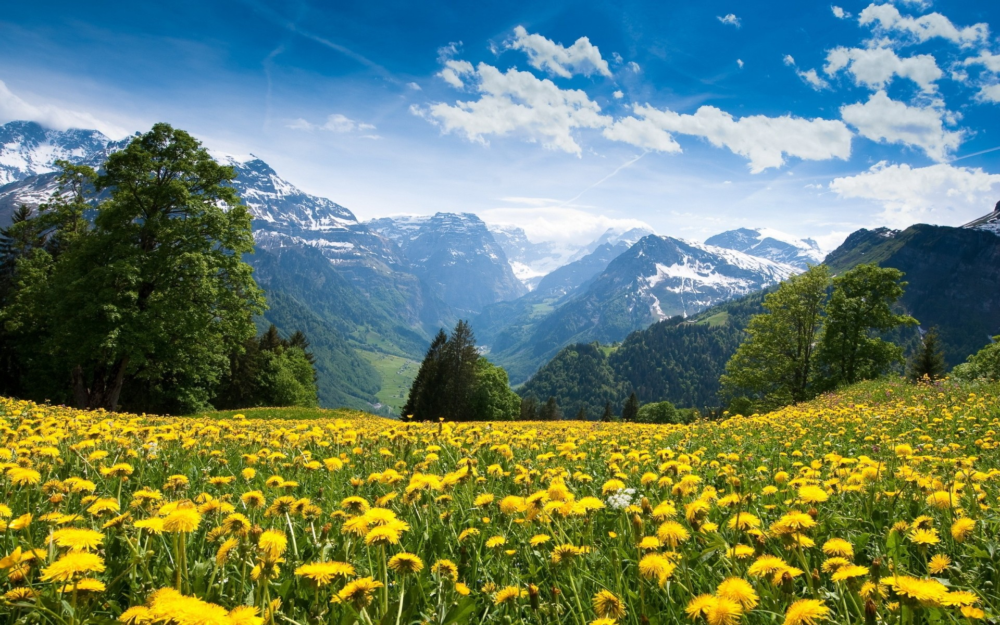

Чем больше человек живет в одиночестве: на реке или в сельской местности, тем больше понимает, что нет ничего прекраснее и лучше, чем выполнять повседневные обязанности просто и естественно. Все, от травы на полях до звезд на небе, делает именно это. В природе такой глубокий покой и такая безмерная красота именно потому, что ничто не пытается выйти за ее пределы. (Тагор)
Дети растут, видя, как разрушается окружающая среда, а ситуация становится непоправимой. Поэтому вместе сажайте клубнику, готовьте лекарства из трав, нарисуйте восход солнца. Покажите детям доказательство того, что за каждый акт разрушения они могут посеять семя красоты, пусть даже маленькое. (Николетт Соудер)